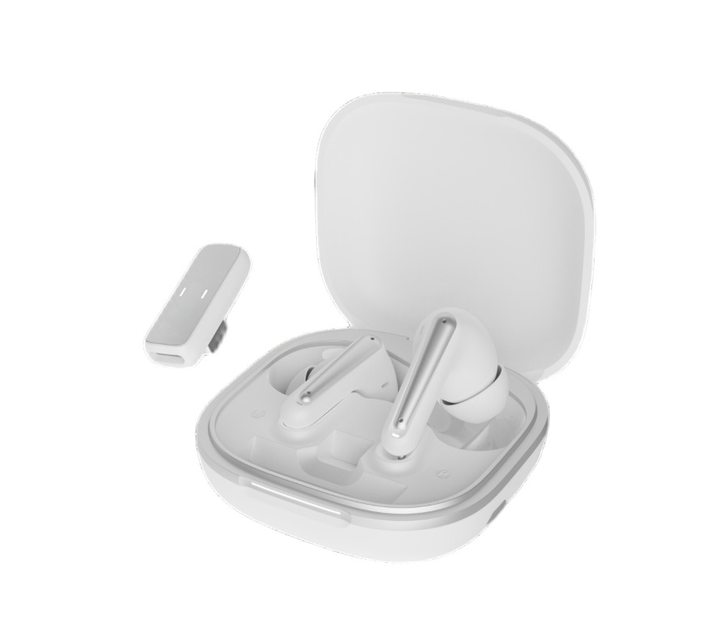

Bluetooth or receiver-based gaming?
Compare the intended audio route and voice-chat task. Three connection modes do not automatically mean simultaneous audio, and a listed latency figure needs its test conditions.

Southeast Asia sourcing
The connector fits. Will game audio and voice chat work together? Compare TALRIVO gaming headsets, TWS and mobile audio on the phones and computers your customers actually use, then agree the country-specific pack.

Before choosing a sample
Turn a broad request for wireless audio into a small, repeatable sample plan. Keep the device results separate from the country and packaging review.
Follow the audio route
Compare the intended audio route and voice-chat task. Three connection modes do not automatically mean simultaneous audio, and a listed latency figure needs its test conditions.
Identify the receiver version, adapter and device port. Use the sample worksheet to record playback and microphone results; a receiver illustration is not a completed phone test.
Keep wired Type-C earphones separate from a wireless headset using a USB-C receiver adapter. Ask which models to sample, then check the target device, microphone and controls.
Match photographs, box contents, connection wording and battery conditions to the selected version. For TWS or Bluetooth headphones, approve those details independently of the gaming-headset sample.
Useful links
Product FAQ
No. Confirm the receiver or wired audio route, then check playback, microphone use and controls on the exact phone, operating system and app. A matching connector alone is not a completed compatibility test.
Start with the target device and whether the customer needs game audio and voice chat together. Compare those tasks on the selected Bluetooth or receiver-based sample. A connection-mode label or an advertised latency figure does not establish the result on every device.
A shared shortlist can help, but keep the destination, device list, packaging language and document questions separate for each country. This page does not establish regional approval, local stock or country-wide compatibility for a model.
Send the destination country, sales channel, target phones or computers, required connection modes and quantity per SKU. Include voice-chat needs, packing language, image requirements and sample timing. List gaming headsets, TWS, Bluetooth headphones or Type-C earphones separately if the brief includes several categories.
Send the country, device list, connection and voice-chat needs with your quantity per SKU. Add packaging language, document questions and sample timing to discuss a focused gaming and mobile-audio shortlist.